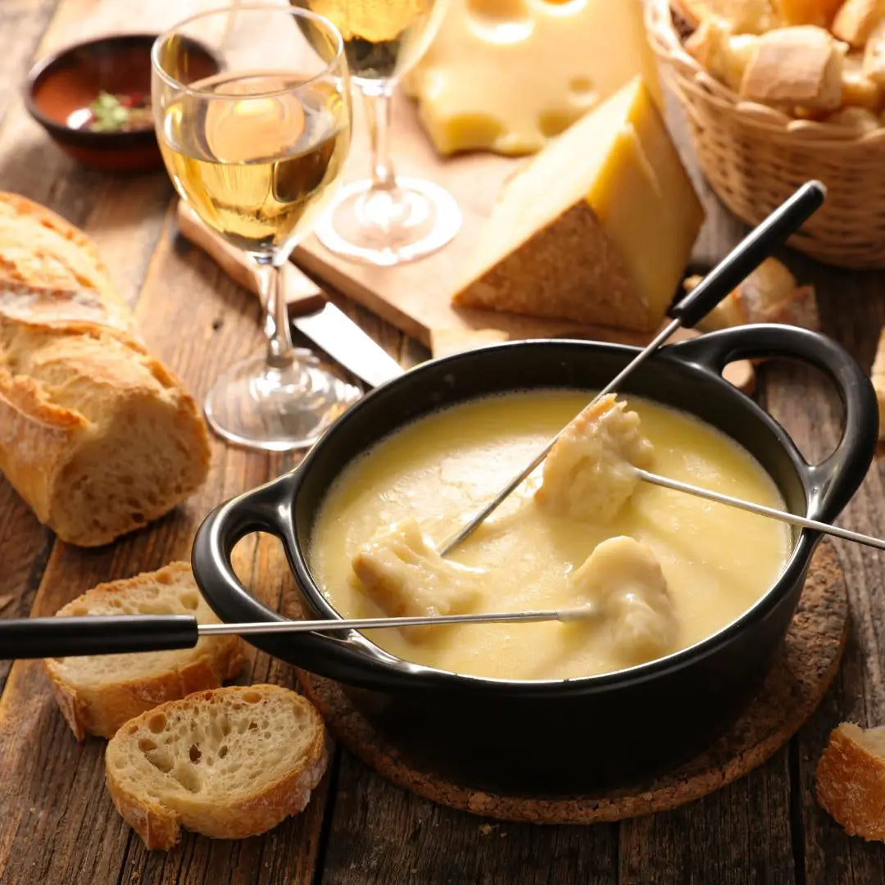

Recette fondue savoyarde

Description
La fondue savoyarde est un plat régional de la gastronomie savoyarde à base de fromage fondu et de pain. Elle est préparée à base de 3 fromages, à partir de produits locaux tels que le comté de montagne, le beaufort, le gruyère de Savoie, l'emmental de Savoie ou encore l'abondance.
Avec l'essor des sports d'hiver et du tourisme alpin depuis les années 1950, la fondue savoyarde est devenue une recette de cuisine populaire en France.
Ingrédients pour 6 personnes
- 1 bon pain au levain
- 375g d’Abondance
- 375g de Beaufort
- 180g d’Emmental de Savoie
- 30 cl de vin blanc de Savoie AOC ou à défaut, un autre vin blanc sec
- 1 gousse d’ail
- 20 ml de Kirsch
- 1 pincée de poivre
- 1 pincée de noix de muscade (facultatif)
Etapes
- Fondre les 3 fromages ensemble.
- Ajoutez hors du feu le Kirsch, le poivre et la noix de muscade.
- Alumez le réchaud de table et déposer le caquelon dessus.
- Servez avec le pain coupé en cubes.